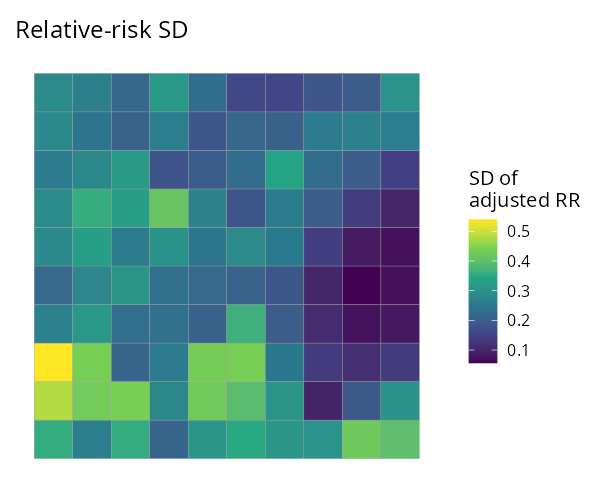
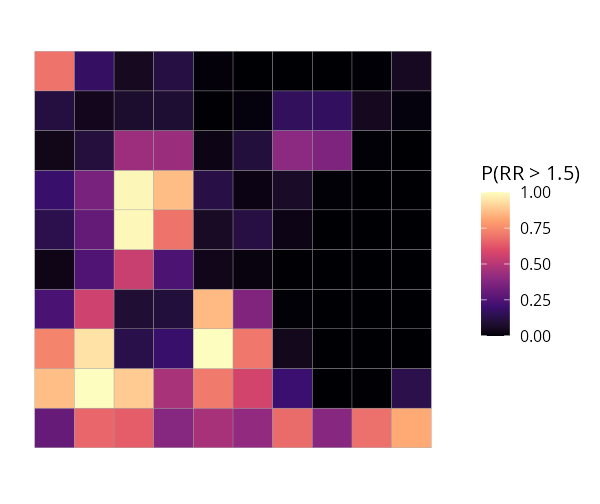
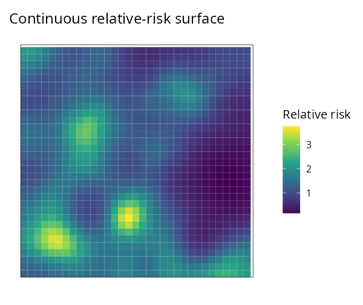

Fast, modern disease mapping. SDALGCP2 fits a spatially discrete approximation to a log-Gaussian Cox process (SDA-LGCP) to spatially aggregated disease counts, with a one-line, glm-like interface and C++ speed. It is a faster, easier successor to SDALGCP (Johnson, Diggle & Giorgi, 2019).
Installation
# install.packages("remotes")
remotes::install_github("olatunjijohnson/SDALGCP2")You need a C++ toolchain (Rtools on Windows, Xcode CLT on macOS) because the performance-critical kernels are compiled.
Quick start — one line to fit
data is an sf object whose columns hold the response, covariates and offset. Everything else (candidate-point spacing, the spatial scale, MCMC settings) is chosen automatically.
library(SDALGCP2)
fit <- sdalgcp(cases ~ deprivation + offset(log(population)), data = regions)
summary(fit) # glm-style coefficient table + spatial parameters
rr <- predict(fit) # an sf with relative_risk, relative_risk_se, incidence
plot(fit) # relative-risk map
plot(fit, "exceedance", threshold = 1.5) # hotspot probabilitiesThat is the whole workflow. The same sdalgcp() call also covers:
| You want… | Add… |
|---|---|
| raster (continuous) covariates |
rasters = my_raster (enter on the intensity scale) |
| a spatio-temporal model | time = "year" |
| population-weighted aggregation | popden = pop_raster |
What you get
| Relative risk | Uncertainty (SD) | Exceedance P(RR > 1.5) | Continuous surface |
|---|---|---|---|
 |
 |
 |
Why SDALGCP2
-
Easy:
sdalgcp(formula, data)— feels likeglm(); sensible defaults so a first fit needs no tuning. - Fast: aggregated correlation assembly, the MALA sampler and the Monte Carlo likelihood run in C++ (RcppArmadillo + OpenMP) — ~8–10× faster end-to-end than the original, returning the same estimates.
-
Grid-free scale: the spatial scale
φis optimised continuously by default (no grid), with a proper standard error — see the derivation PDF. - Continuous covariates done right: rasters enter on the intensity scale (log-sum-exp), not by averaging predictors over polygons — see the raster PDF.
-
Spatio-temporal without ever forming the
(N·T)²covariance. - Honest uncertainty: re-anchored Monte Carlo likelihood, importance-sampling diagnostics, a nugget term, model checking (residual Moran’s I).
Tutorials
See the package website for worked, reproducible articles:
- Spatial disease mapping — the full workflow end to end.
- Raster predictors — intensity-scale covariates vs naive areal averaging.
- Spatio-temporal — space-time relative risk.
-
Estimating the scale — grid (
scale = "grid") vs continuous (scale = "continuous")φ.